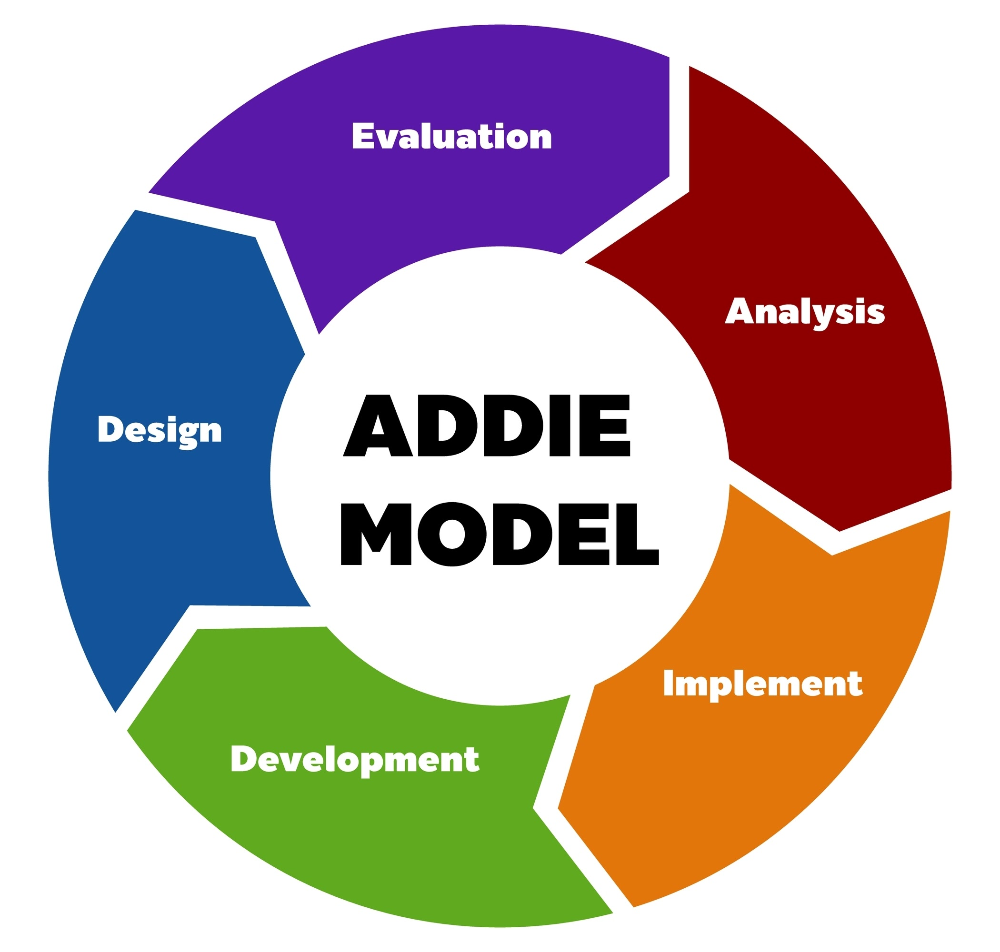
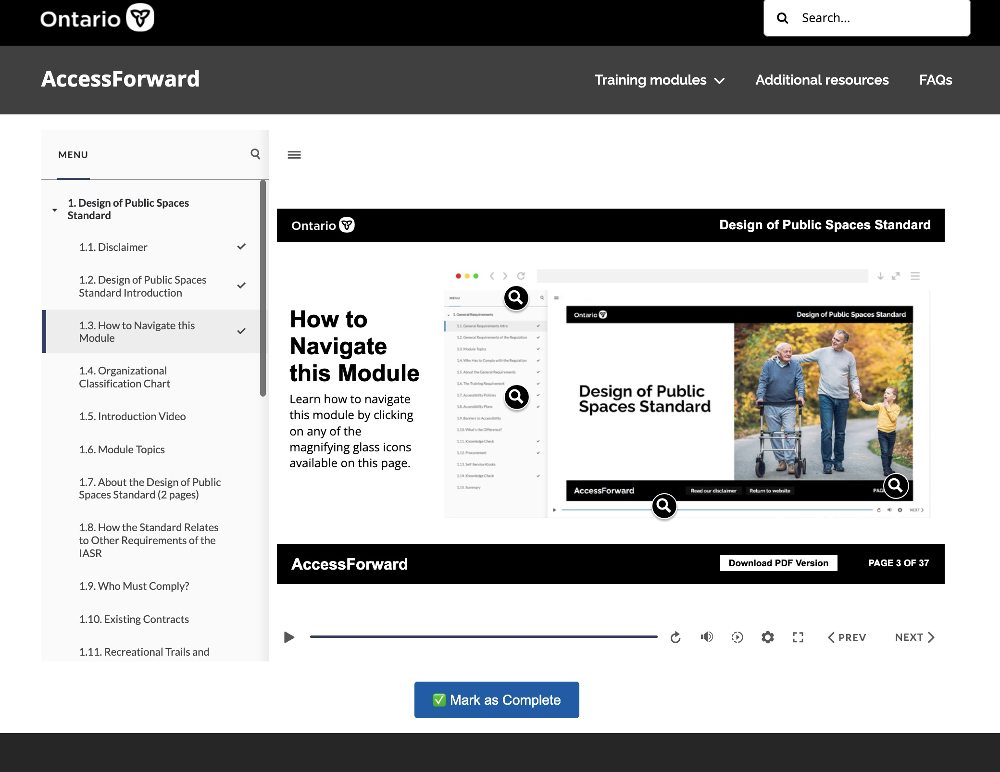
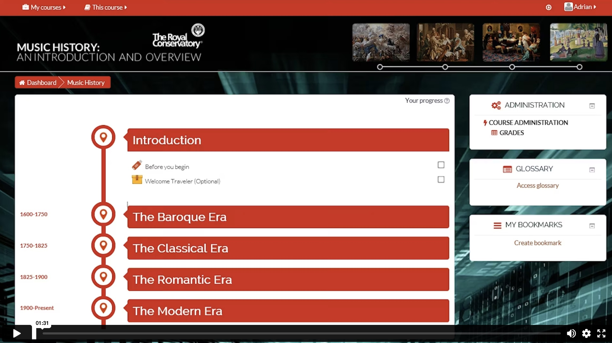
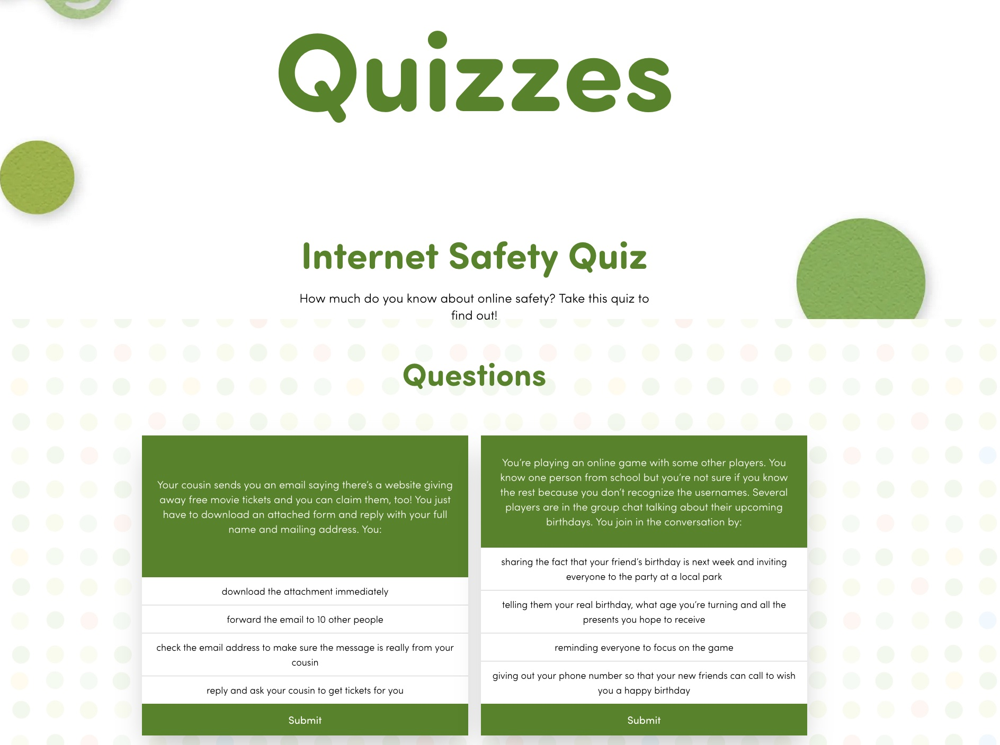

Alignment: Level 4 Simulations | Banking | Business Acumen
Case Study 1: The Complex Financial Simulation

Architecture of complex Level 4 simulations, financial compliance training, and WCAG 2.1 accessible learning ecosystems for global operations.




Identifying performance gaps through SME consultation and data-driven needs analysis.
Developing blueprints, non-linear branching logic, and high-fidelity storyboards.
Authoring in Storyline 360 with a focus on WCAG 2.1 compliance and brand alignment.
QA testing, LMS integration (SCORM/xAPI), and post-launch metric analysis.
I am currently seeking a high-complexity Instructional Designer/Developer role to apply my 8+ years of experience in the financial and public sectors.
Connect for an InterviewAvailable for March 2026 backfill opportunities.